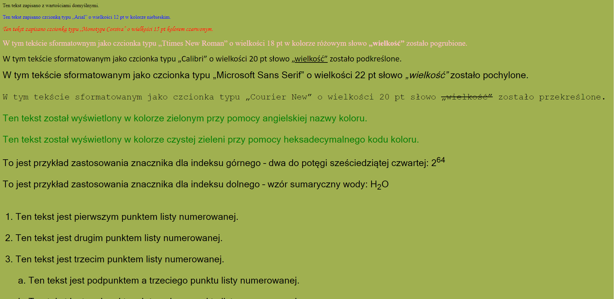
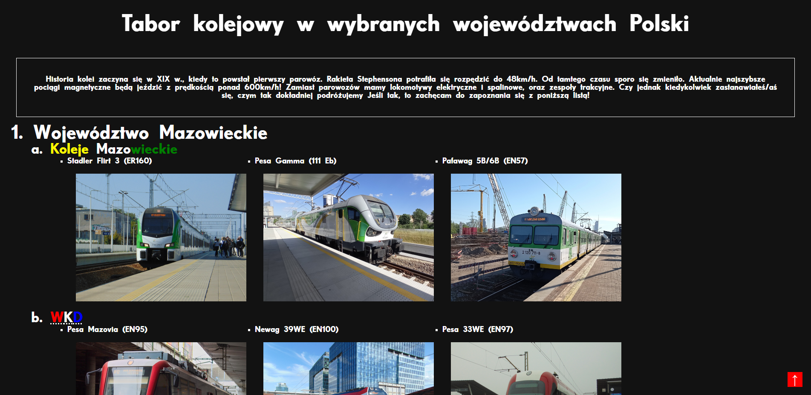
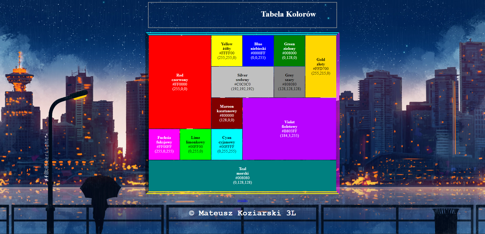
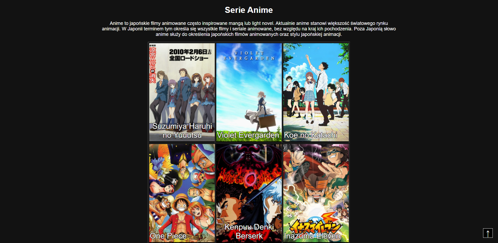
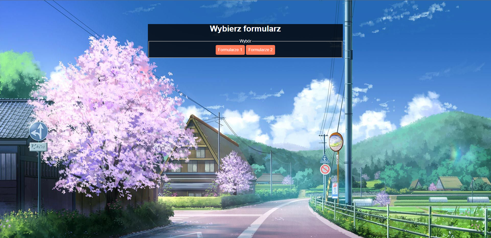
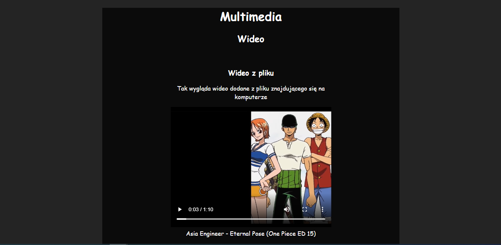

Witaj internauto! Znajdujesz się na stronie Mini poradnik HTML 5 i CSS 3. Na tej stronie nauczysz się HTMLa i CSS na podstawie przykładowych stron internetowych. Jeżeli jesteś zaintersowany sprawdź strony po prawej stronie! Miłej zabawy i powdzenia w nauce!
HTML czyli HyperText Markup Language (pol. hipertekstowy język znaczników) - jest to język służący do tworzenia dokumentów hipertekstowych oraz opisywania struktury informacji zawartych wewnątrz strony. Aktualnie obowiązującą wersją HTML jest W3C HTML 5. HTML opisuje strukturę stron internetowych, a CSS określa formę jej prezentacji w przeglądarce. Dzięki językowi HTML możemy dodawać do tekstu akapity, hiperłącza, nagłówki, pliki graficzne czy multimedialne czy formularze. HTML określa także jak dokument będzie wyglądał w przeglądarce internetowej.

Tak wygląda kod powyższego filmu:
Pełny film znajdziesz klikając tutaj
Kaskadowe arkusze stylów CSS (ang. Cascading Style Sheets) to kod służący do nadawania wyglądu strony. CSS Podstawy przeprowadzi cię przez bazowe zagadnienia, abyś mógł zacząć modyfikować wygląd swojej strony.Arkusze stylów CSS to zbiór wytycznych, regulujących wygląd danego dokumentu. O ile np. XHTML decyduje o strukturze strony, to CSS odpowiedzialny jest za jej prezentację. Ułatwia on niezwykle pozycjonowanie elementów i ma tą przewagę, że może jednocześnie odnosić się do wielu dokumentów.

Tak wygląda kod powyższego filmu:
Pełny film znajdziesz klikając tutaj
Dzięki tej pracy zobaczysz, jak konfiguruje się tekst i inne podstawowe wartości stron
W tej pracy starałem się zrobić rozbudowaną listę z grafiką i opisami
Praca w której przedstawiłem kody różnych kolorów w postaci tabeli
Mieszanka znaczników, takich jak w tytule pracy
W tej pracy pokazuję jak tworzyć formularze i quizy
Strona ze zdjęciami, filmami i plikami audio
Mateusz Koziarski ©